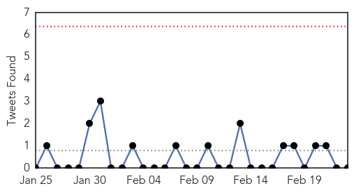
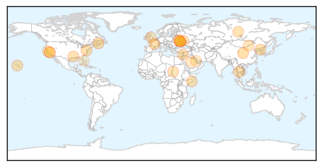
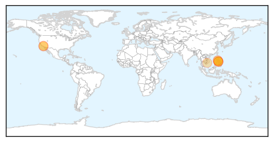

Unknown
30-Day Web Trend
0 alerts, 7 warnings

30-Day Twitter Trend
0 alerts, 0 warnings

Article Locations
Article Confidences

Top Articles:
- 0.967
- Deadly pig virus in Quebec
- 0.954
- First case of deadly pig virus reported in Quebec
- 0.917
- Chicago Tribune
- 0.917
- Chicago Tribune
- 0.917
- Chicago Tribune
- 0.910
- Kuwait - 'Measures taken to prevent flu outbreak'
- 0.910
- The world windows to Thailand
- 0.910
- Mysterious Polio Like Illness Striking California Children
- 0.906
- Rare 'polio-like' disease reports
- 0.885
- Sudan: Sudan Health Highlights, 1 - 14 February 2014
- 0.866
- Russia recalls ambassador in Ukraine for consultations
- 0.866
- Merkel, Putin say Ukraine must remain intact
- 0.866
- Putin, Merkel discuss Ukraine over phone
- 0.866
- Ukraine parliament ousts pro-Yanukovich foreign minister
- 0.866
- Ukraine order given to detain ex-incomes minister, ex-prosecutor general
- 0.866
- Car bomb in Syrian town kills nine people -activists
- 0.866
- Daughter signals Ukraine opposition leader Tymoshenko to go free
- 0.866
- Somali president unharmed in attack on palace
- 0.803
- Goat Plague Outbreak Confirmed in Inner Mongolia
- 0.760
- Mysterious polio-like illness affects kids in California
- 0.713
- Polio-like disease puzzles doctors in Calif.
- 0.694
- Bee virus spreading: Deadly diseases hitting wild honeybees, populations shrink
- 0.679
- Database of medical and clinical facts launched
- 0.636
- Gulf Daily News Local News Medical staff shortage SOS
- 0.524
- CDC Investigate Outbreak On Cruise Which Docked In S.Fla. « CBS Miami
Top Tweets:
-
No tweets found for Feb 23, 2014
Measles
30-Day Web Trend
1 alerts, 0 warnings

30-Day Twitter Trend
0 alerts, 0 warnings

Article Locations
Article Confidences

Top Articles:
- 0.982
- Concerns over increase in measles cases in California
- 0.971
- California reports surge in measles, some cases linked to travel to Philippines, India
- 0.959
- 15 cases of measles in California since Jan 1
- 0.956
- Flu deaths increase to 278 across California
- 0.942
- Deputy PM urges concerted fight against measles, bird flu
- 0.845
- As California’s Flu Season Fades, New Threat Emerges: Measles
- 0.741
- California Reports 15 Cases Of Measles In 2014, Compared To Two Last Year
- 0.589
- Even affluent families skipping vaccination
- 0.576
- Even affluent families skipping vaccination
Top Tweets:
-
No tweets found for Feb 23, 2014